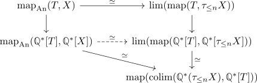
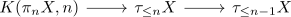
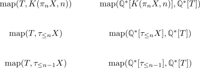
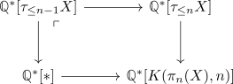
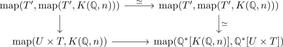
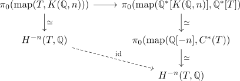

sullivans fully faithfulness theorem about Q
Proposition
The functor
from the category of simple rational anima is fully faithful when restricted to the subcategory of Q-finite type
Proof
we will show that for all test anima $T \in \mathrm{An}$ and all $X \in \mathrm{An}_{\mathbb{Q}, \mathrm{fin}_{\mathbb{Q}}}^{\mathrm{simple}}$ the map
is an equivalence
1) reduction to truncation
first write $X = \mathrm{lim} \tau_{\leq n} X$ (cf. postnikov tower of an anima, limit of postnikov tower equivalent on anima). Then we get a map
where $\tau X$ still satisfies the assumptions above (cf. finite Q-cohomological type and finite rational homotopy groups -todo, truncation of a simple anima is simple, truncation of rational anima is rational)
Now this fits into a diagram

Now induct over $n$: Proof by induction
induction basis: $n = 0$
See below for the case of eilenberg maclane anima
induction step
Consider the fiber sequence

which induces fiber sequences

Now the LHS is a fiber sequence (cf. mapping anima functor preserves limits).
Now we want to show that the RHS is also a So the eilenberg-moore theorem for a field says that

is a pushout
Now $\mathbb{Q}^*[*]$ is the initial object in $\mathrm{CAlg}(\mathrm{Mod}\mathbb{Q})$, so the diagram above is a cofiber sequence.
Inductively we know that the bottom map is an isomorphism, so it suffices to show that this holds for Eilenberg-MacLane anima.
eilnberg maclane
now since $A$ is a finite dimensional vector space, $K(A,n) \simeq K(\mathbb{Q}, n)^{\times k}$ for some $k$. Using eilenberg moore or kunneth we can reduce to the case $k=1$.
So we need to show that
is an equivalence.
So by adjunction

Now use the homotopy category yoneda trick for anima, so it suffices to show that the map
\begin{displaymath}
\begin{tikzcd}
\pi_0(\mathrm{map}(T, K(\mathbb{Q},n))) \rar & \pi_0(\mathrm{map}(\mathbb{Q}^*[K(\mathbb{Q},n)], \mathbb{Q}^*[T])\\
# H^{-n}(T, \mathbb{Q}) \arrow[dashed]{rd}{\mathrm{id}}& \pi_0(\mathrm{map}(\mathbb{Q}[-n], C^*(T)) \dar \\
# & H^{-n}(T, \mathbb{Q})
\end{tikzcd}
\end{displaymath}is an isomorphism.
Now using
- representability of cohomology.
- rational cohomology of the rational eilenberg maclane space & rational cohomology ring of the rational eilenberg maclane space is free & definition of the cohomology

we get the commutative diagram diagram